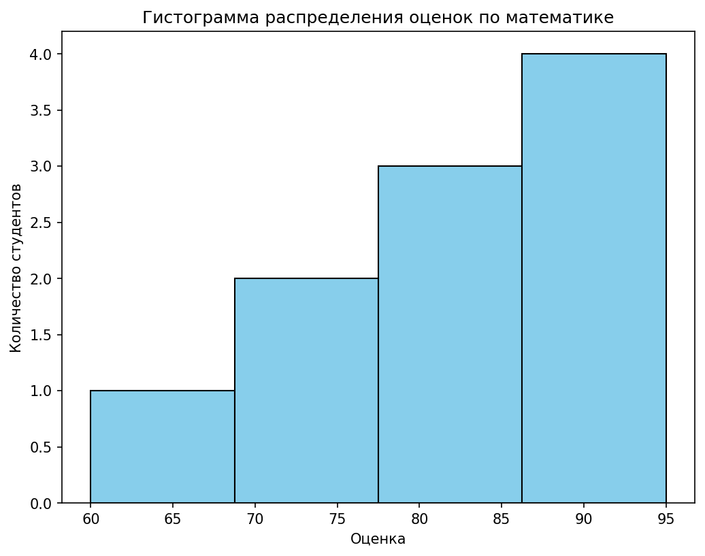
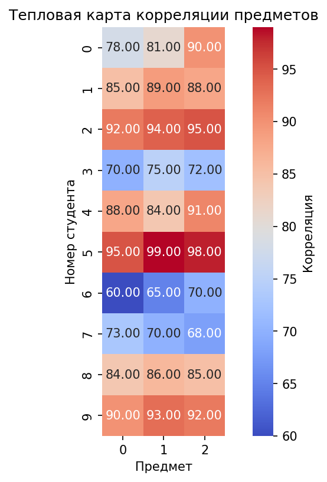
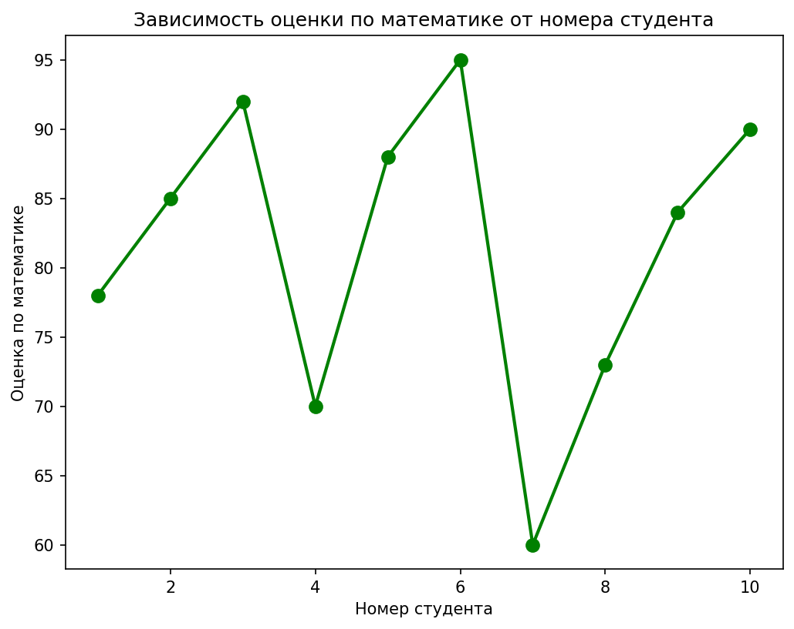

Labwork 2 Tutorial
Цель работы
Освоить базовые операции с массивами и матрицами в библиотеке NumPy, реализовать статистический анализ данных и визуализацию результатов с использованием Matplotlib
Выполненные функции:
1. Создание и обработка массивов
create_vector()— создает одномерный массив целых чисел от 0 до 9create_matrix()— генерирует матрицу 5×5 со случайными числами в диапазоне [0, 1)reshape_vector(vec)— изменяет форму вектора из (10,) в матрицу (2, 5)transpose_matrix(mat)— выполняет транспонирование матрицы (строки ↔ столбцы)
2. Векторные операции
vector_add(a, b)— выполняет поэлементное сложение двух векторовscalar_multiply(vec, scalar)— умножает каждый элемент вектора на заданное числоelementwise_multiply(a, b)— выполняет поэлементное умножение двух массивов одинаковой формыdot_product(a, b)— вычисляет скалярное произведение двух векторов
3. Матричные операции
matrix_multiply(a, b)— выполняет матричное умножениеmatrix_determinant(a)— вычисляет определитель квадратной матрицыmatrix_inverse(a)— находит обратную матрицу для невырожденной квадратной матрицыsolve_linear_system(a, b)— решает систему линейных уравнений вида Ax = b
4. Статистический анализ
load_dataset(path)— загружает данные из CSV-файла и преобразует их в NumPy-массивstatistical_analysis(data)— вычисляет основные статистики: среднее, медиану, стандартное отклонение, минимум, максимум и перцентили (25%, 75%)normalize_data(data)— выполняет Min-Max нормализацию данных, приводя их к диапазону [0, 1]
5. Визуализация
plot_histogram(data)— строит гистограмму распределения значений (оценок)
plot_heatmap(data)— визуализирует матрицу корреляций в виде тепловой карты
plot_line(x, y)— строит линейный график зависимости одной величины от другой
Используемые библиотеки
| Библиотека | Назначение |
|---|---|
numpy |
Работа с многомерными массивами, линейная алгебра |
pandas |
Загрузка и предобработка CSV-данных |
matplotlib |
Построение статических графиков |
seaborn |
Визуализация статистических данных, тепловые карты |
Структура проекта
LR-2/
├── main.py # Основной код с функциями
├── test.py # Тесты
├── LR-2-main.py # Критерии оценивания лабораторной работы
├── data/
│ └── students_scores.csv # Исходные данные для графиков
├── plots/ # Сгенерированные графики
│ ├── histogram.png
│ ├── heatmap.png
│ └── plot_line.png